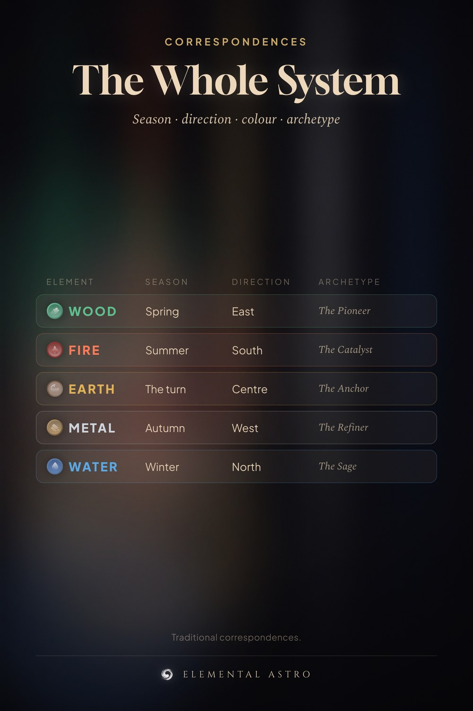

One card, the whole correspondence system. Wood is spring, east, green, the pioneer. Fire is summer, south, red, the catalyst. Earth is the centre and the turn of every season. Metal is autumn, west, white. Water is winter, north, black. Save it for feng shui, for four pillars, for styling your space by element. Five elements chart correspondences, Chinese astrology.
https://www.elementalastro.io/learn/five-elements